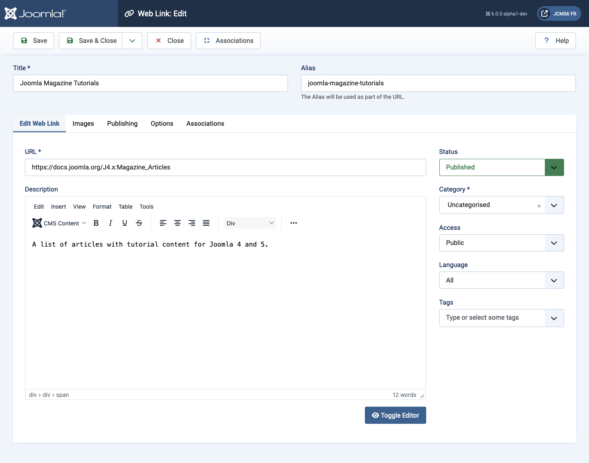
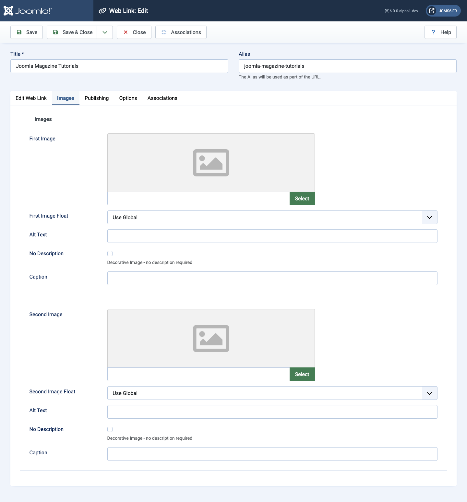
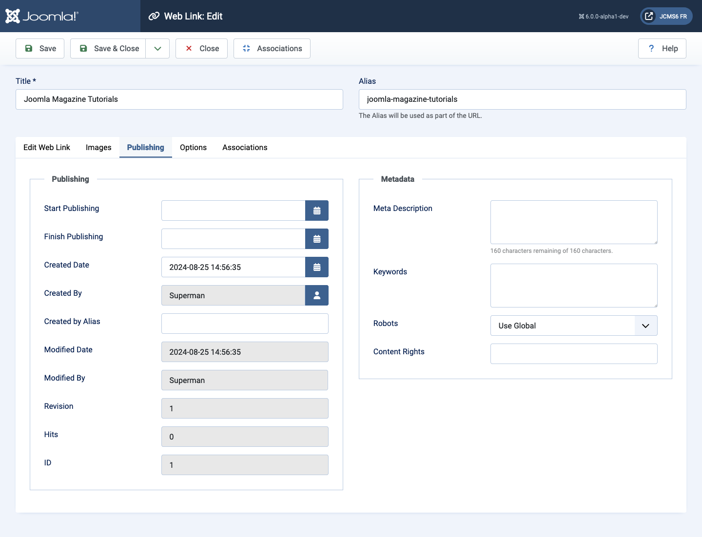
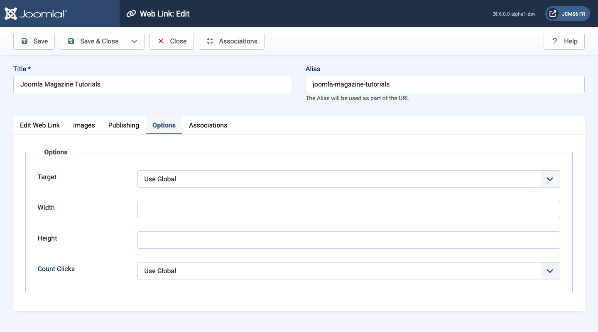

Joomla Help Screens
Web Link: Edit
Description
This form is used to add a new Web Link or edit an existing link. Note that you need to create at least one Web Links Category before you can create your first Web Link.
Common Elements
Some elements of this page are covered in separate Help articles:
How to Access
- Select Components → Web Links → Links from the Administrator menu. Then...
- Select the New button in the Toolbar to create a new link. Or...
- Select a title in the list of links to edit an existing link.
Screenshot

Form Fields
Left Panel
- URL The URL of the Web Link.
- Description The description for the item. Category, Subcategory and Web Link descriptions may be shown on web pages, depending on the parameter settings. These descriptions are entered using the same editor that is used for Articles.
Images tab

- First Image Click on Select to select an image to display with this item in the front end.
- Image Float Where to place the image relative to the text on the page.
- Alt text Alternative text to use for visitors who don't have access to images. This text is replaced with the caption text if caption text is available.
- Caption The caption for the image.
- Second Image Click on Select to select an image to display with this item in the front end.
- Image Float (Use Global/Right/Left/None). Where to place the image relative to the text on the page.
- Alt text Alternative text to use for visitors who don't have access to images. This text is replaced with the caption text if caption text is available.
- Caption The caption for the image.
Publishing tab

- Start Publishing Date and time to start publishing. Use this field if you want to enter content ahead of time and then have it published automatically at a future time.
- Finish Publishing Date and time to finish publishing. Use this field if you want to have content automatically changed to Unpublished state at a future time (for example, when it is no longer applicable).
- Created Date This field defaults to the current time when the Article was created. You can enter in a different date and time or click on the calendar icon to find the desired date.
- Created By Name of the Joomla! User who created this item. This will default to the currently logged-in user. If you want to change this to a different user, click the Select User button to select a different user.
- Author's Alias This optional field allows you to enter in an alias for this Author for this Article. This allows you to display a different Author name for this Article.
- Modified Date (Informative only) Date of last modification.
- Modified By (Informative only) Username who performed the last modification.
- Revision (Informative only) Number of revisions to this item.
- Hits The number of times an item has been viewed.
- ID This is a unique identification number for this item assigned automatically by Joomla!. It is used to identify the item internally, and you cannot change this number. When creating a new item, this field displays 0 until you save the new entry, at which point a new ID is assigned to it.
- Meta Description An optional paragraph to be used as the description of the page in the HTML output. This will generally display in the results of search engines. If entered, this creates an HTML meta element with a name attribute of "description" and a content attribute equal to the entered text.
- Meta Keywords Optional entry for keywords. Must be entered separated by commas (for example, "cats, dogs, pets") and may be entered in upper or lower case. (For example, "CATS" will match "cats" or "Cats").
- External Reference An optional reference used to link to external data sources. If entered, this creates an HTML meta element with a name attribute of "xreference" and a content attribute equal to the entered text.
- Robots The instructions for web "robots" that browse to this
page.
- Use Global: Use the value set in the Component→Options for this component.
- Index, Follow: Index this page and follow the links on this page.
- No index, Follow: Do not index this page, but still follow the links on the page. For example, you might do this for a site map page where you want the links to be indexed but you don't want this page to show in search engines.
- Index, No follow: Index this page, but do not follow any links on the page. For example, you might want to do this for an events calendar, where you want the page to show in search engines but you do not want to index each event.
- No index, no follow: Do not index this page or follow any links on the page.
- Content Rights Describe what rights others have to use this content.
Options tab

- Target How to open the link. Options are:
- Open in parent window. Open the link in the current browser window, allowing Back and Forward navigation.
- Open in new window. Open the link in a new browser window, allowing Back and Forward navigation.
- Open in popup. Open link in a popup window.
- Modal. Open link in a modal screen.
- Width Width of the IFrame Window. Enter in a number of pixels or enter in a percentage (%). For example, "550" means 550 pixels. "75%" means 75% of the page width.
- Height Height of the IFrame Window. Enter in a number of pixels or enter in a percentage (%). For example, "550" means 550 pixels. "75%" means 75% of the page height.
- Count Clicks Whether or not to keep track of how many times this web link has been opened.